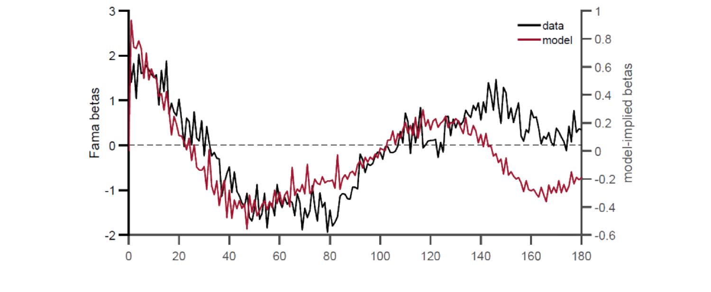
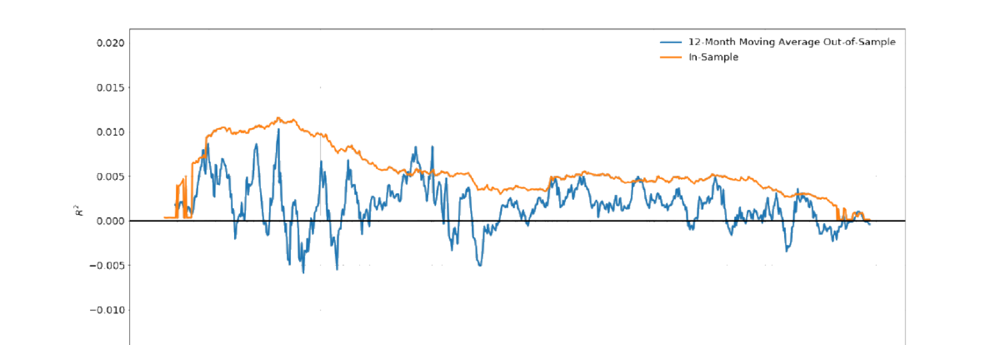

30. Investor's Decision-Making in High Dimensional Environments
本章研究投资者在高维环境（预测变量数 \(J\) 巨大）中的决策及其资产定价含义。两篇代表作：(§30.1) Molavi et al. (2020) 提出受限理性预期 (constrained rational expectations, CREE)——代理人只能用至多 \(k\) 个因子的模型（不必与驱动基本面的 \(n\) 个真实因子一致），其信念由最小化与真实数据生成过程的 KL 散度 的最优 \(k\) 因子模型生成。这种"维度受限"是一种行为假设：\(k
This chapter studies investor decision-making in high-dimensional environments (the number of predictors \(J\) is huge) and its asset pricing implications. Two representative papers: (§30.1) Molavi et al. (2020) propose constrained rational expectations (CREE) — agents can only use models with at most \(k\) factors (not necessarily consistent with the \(n\) true factors driving the fundamental), with beliefs generated by the optimal \(k\)-factor model minimizing the KL divergence from the true data-generating process. This "dimension restriction" is a behavioral assumption: when \(k
30.1 Model Misspecification: Molavi et al. (2020)
30.1.1 / 30.1.2 Key Points & Setup
Molavi et al. (2020) 研究模型误设的资产定价含义：经济中代理人只能用至多 \(k\) 个因子的模型（不必与驱动基本面的真实因子一致）。受限理性预期 (constrained-rational expectations) 是对理性预期的误设对应——代理人基于最拟合其观测的 \(k\) 因子模型形成预期。所得收益在多个期限可预测（偏离理性预期理论），用以分析 UIP 违反与动量/反转。
离散时间经济，单位质量同质代理人。一列单变量外生基本面（如资产股利或利率差）\(\{x_t\}_{t=-\infty}^\infty\) 由平稳 \(n\) 因子模型驱动，\(\boldsymbol\theta^\star=(\mathbf A^\star,\mathbf b^\star,\boldsymbol\Sigma_\epsilon^\star)\) (30.1)/(30.2)：
Molavi et al. (2020) study the asset pricing implications of model misspecification: agents in the economy can only use models with at most \(k\) factors (not necessarily consistent with the true factors driving the fundamental). Constrained-rational expectations is the misspecified counterpart to rational expectations — agents form expectations based on the \(k\)-factor model that best fits their observations. The resulting returns are predictable at several horizons (departing from rational-expectations theory), used to analyze UIP violations and momentum/reversal.
A discrete-time economy with a unit mass of homogeneous agents. A sequence of univariate exogenous fundamentals (e.g. asset dividends or interest rate differentials) \(\{x_t\}_{t=-\infty}^\infty\) is driven by a stationary \(n\)-factor model, \(\boldsymbol\theta^\star=(\mathbf A^\star,\mathbf b^\star,\boldsymbol\Sigma_\epsilon^\star)\) (30.1)/(30.2):
$$\mathbf z_t=\mathbf A^\star\mathbf z_{t-1}+\boldsymbol\epsilon_t^\star,\qquad x_t=\mathbf b^{\star\prime}\mathbf z_t\tag{30.1–2}$$
\(\{x_t\}\) 可观测，\(\mathbf z_t\in\mathbb R^n\) 为不被代理人观测/知晓的真因子向量（无冗余，即无更少因子可生成基本面）、\(\mathbf A^\star\in\mathbb R^{n\times n}\) 治理因子演化、\(\boldsymbol\epsilon_t^\star\in\mathbb R^n\) i.i.d. \(\mathcal N(\mathbf 0,\boldsymbol\Sigma_\epsilon^\star)\)、\(\mathbf b^\star\in\mathbb R^n\) 为基本面因子载荷。内生价格列 \(\{y_t\}\) 由观测的 \(\{x_t\}\) 与代理人主观信念决定 (30.3)：\(y_t=x_t+\delta\tilde{\mathbb E}_t[y_{t+1}]\)，\(\tilde{\mathbb E}_t[\cdot]\) 为 \(t\) 时主观期望、\(\delta\in[0,1]\) 贴现率，等价 (30.4)：\(y_t=\sum_{\tau=0}^\infty\delta^\tau\tilde{\mathbb E}_t[x_{t+\tau}]\)（\(\mathbb E^\star[\cdot]\) 记客观期望）。超额收益 (30.5)：\(rx_{t+1}=\delta y_{t+1}+x_t-y_t\)，由 (30.3) 重写为已实现与预期价格之贴现差 (30.6)：\(rx_{t+1}=\delta(y_{t+1}-\tilde{\mathbb E}_t[y_{t+1}])\)。
行为假设：代理人模型最多用 \(k\) 个因子（\(k 理性预期基准下未来收益不可预测，故收益可预测性自然度量代理人偏离理性预期的程度。两族线性回归：30.1.3 Return Predictability
\(\{x_t\}\) is observable, \(\mathbf z_t\in\mathbb R^n\) the vector of true factors not observed/known by agents (no redundancy, i.e. no fewer factors can generate the fundamental), \(\mathbf A^\star\in\mathbb R^{n\times n}\) governs factor evolution, \(\boldsymbol\epsilon_t^\star\in\mathbb R^n\) i.i.d. \(\mathcal N(\mathbf 0,\boldsymbol\Sigma_\epsilon^\star)\), \(\mathbf b^\star\in\mathbb R^n\) the fundamental's factor loadings. The endogenous price sequence \(\{y_t\}\) is determined by observed \(\{x_t\}\) and agents' subjective beliefs (30.3): \(y_t=x_t+\delta\tilde{\mathbb E}_t[y_{t+1}]\), \(\tilde{\mathbb E}_t[\cdot]\) the time-\(t\) subjective expectation, \(\delta\in[0,1]\) the discount rate, equivalently (30.4): \(y_t=\sum_{\tau=0}^\infty\delta^\tau\tilde{\mathbb E}_t[x_{t+\tau}]\) (\(\mathbb E^\star[\cdot]\) the objective expectation). Excess return (30.5): \(rx_{t+1}=\delta y_{t+1}+x_t-y_t\), rewritten by (30.3) as the discounted difference between realized and expected price (30.6): \(rx_{t+1}=\delta(y_{t+1}-\tilde{\mathbb E}_t[y_{t+1}])\).
Behavioral assumption: agents use models with at most \(k\) factors (when \(k Under the rational-expectations benchmark future returns are unpredictable, so return predictability is a natural measure of how far agents depart from rational expectation. Two families of linear regressions:30.1.3 Return Predictability
$$rx_{t+h}=\alpha_h^{\text{Fama}}+\beta_h^{\text{Fama}}x_t+\epsilon_{t,h}^{\text{Fama}}\tag{30.8}$$
$$rx_{t+h}=\alpha_h^{\text{mom}}+\beta_h^{\text{mom}}rx_t+\epsilon_{t,h}^{\text{mom}}\tag{30.9}$$
Fama 回归 (30.8) 度量当前基本面对不同期限 \(h\ge1\) 未来超额收益的预测；动量回归 (30.9) 度量当前超额收益对未来超额收益的预测。理性预期成立则收益不可预测，即 \(\beta_h^{\text{Fama}}=0\) 且 \(\beta_h^{\text{mom}}=0\) \(\forall h\)。命题 30.1 给出 \(\beta_h^{\text{Fama}}\) (30.10)、\(\beta_h^{\text{mom}}\) (30.11–30.13) 的表达式（推导见折叠）。命题 30.1 结论：理性预期（\(\tilde{\mathbb E}_t=\mathbb E^\star\)）下 \(\alpha_h^{\text{Fama}}=\alpha_h^{\text{mom}}=0\)、\(\beta_h^{\text{Fama}}=\beta_h^{\text{mom}}=0\)，收益任意期限皆不可预测；理性预期不成立时斜率系数一般非零、且因 \(h\) 而异。
30.1.4 Constrained Rational Expectations
\(t\) 时 \(\{x_{\tau}\}_{\tau\le t}\) 可观测，但 \(\mathbf z_t\) 与 \((\mathbf A^\star,\mathbf b^\star,\boldsymbol\Sigma_\epsilon^\star)\) 不可观测。代理人用 \(k\) 因子模型 (30.14)/(30.15)：\(\boldsymbol\omega_t=\mathbf A\boldsymbol\omega_{t-1}+\boldsymbol\epsilon_t\)、\(x_t=\mathbf b'\boldsymbol\omega_t\)，\(\boldsymbol\omega_t\in\mathbb R^k\)、\(\mathbf A\in\mathbb R^{k\times k}\)、\(\boldsymbol\epsilon_t\) i.i.d. \(\mathcal N(\mathbf 0,\boldsymbol\Sigma_\epsilon)\)、\(\mathbf b\in\mathbb R^k\)。\(\boldsymbol\theta=(\mathbf A,\mathbf b,\boldsymbol\Sigma_\epsilon)\) 概括 \(k\) 因子模型，\(\Theta_k\) 为全部 \(k\) 因子模型集（\(\Theta_k\subseteq\Theta_{k+1}\)；\(k\ge n\) 时 \(\boldsymbol\theta^\star\in\Theta_k\)，\(k Definition 30.1（KL 散度）
模型 \(\boldsymbol\theta\in\Theta_k\) 对真数据生成过程的 Kullback-Leibler (KL) 散度 (30.16)：\(\text{KL}(\boldsymbol\theta^\star\|\boldsymbol\theta)\equiv\mathbb E^\star[-\ln f^{\boldsymbol\theta}(x_{t+1}\mid\{x_t,x_{t-1},\dots\})]-\mathbb E^\star[-\ln f^\star(x_{t+1}\mid\{x_t,x_{t-1},\dots\})]\)，\(f^\star\)、\(f^{\boldsymbol\theta}\) 分别为真过程与模型 \(\boldsymbol\theta\) 的密度。由 Jensen 不等式 KL 散度非负、当 \(f^{\boldsymbol\theta}=f^\star\) 时为零。 [!tip] Definition 30.2（CREE）
受限理性预期均衡 (CREE) 由价格过程 \(\{y_t\}\) 与代理人选的模型 \(\boldsymbol\theta^{\text{CREE}}\in\Theta_k\) 构成，使：(1) 价格满足 (30.3)；(2) 主观预期 \(\tilde{\mathbb E}_t[\cdot]\) 由 \(k\) 因子模型 \(\boldsymbol\theta^{\text{CREE}}\) 生成；(3) \(\boldsymbol\theta^{\text{CREE}}\in\arg\min_{\boldsymbol\theta\in\Theta_k}\text{KL}(\boldsymbol\theta^\star\|\boldsymbol\theta)\)。注：\(k\ge n\) 时 \(\boldsymbol\theta^{\text{CREE}}=\boldsymbol\theta^\star\)。
The Fama regression (30.8) measures how current fundamental predicts future excess returns at different horizons \(h\ge1\); the momentum regression (30.9) measures how current excess return predicts future excess returns. If rational expectation holds, returns are unpredictable, i.e. \(\beta_h^{\text{Fama}}=0\) and \(\beta_h^{\text{mom}}=0\) \(\forall h\). Proposition 30.1 gives expressions for \(\beta_h^{\text{Fama}}\) (30.10) and \(\beta_h^{\text{mom}}\) (30.11–30.13) (derivation in the collapsible proof). Proposition 30.1 conclusions: under rational expectation (\(\tilde{\mathbb E}_t=\mathbb E^\star\)) \(\alpha_h^{\text{Fama}}=\alpha_h^{\text{mom}}=0\), \(\beta_h^{\text{Fama}}=\beta_h^{\text{mom}}=0\), returns unpredictable at any horizon; when rational expectation fails the slope coefficients are generally nonzero and differ by \(h\).
30.1.4 Constrained Rational Expectations
At \(t\), \(\{x_{\tau}\}_{\tau\le t}\) is observable, but \(\mathbf z_t\) and \((\mathbf A^\star,\mathbf b^\star,\boldsymbol\Sigma_\epsilon^\star)\) are not. Agents use a \(k\)-factor model (30.14)/(30.15): \(\boldsymbol\omega_t=\mathbf A\boldsymbol\omega_{t-1}+\boldsymbol\epsilon_t\), \(x_t=\mathbf b'\boldsymbol\omega_t\), \(\boldsymbol\omega_t\in\mathbb R^k\), \(\mathbf A\in\mathbb R^{k\times k}\), \(\boldsymbol\epsilon_t\) i.i.d. \(\mathcal N(\mathbf 0,\boldsymbol\Sigma_\epsilon)\), \(\mathbf b\in\mathbb R^k\). \(\boldsymbol\theta=(\mathbf A,\mathbf b,\boldsymbol\Sigma_\epsilon)\) summarizes the \(k\)-factor model, \(\Theta_k\) the set of all \(k\)-factor models (\(\Theta_k\subseteq\Theta_{k+1}\); \(\boldsymbol\theta^\star\in\Theta_k\) when \(k\ge n\), \(\boldsymbol\theta^\star\notin\Theta_k\) when \(k Definition 30.1 (KL divergence)
The Kullback-Leibler (KL) divergence of model \(\boldsymbol\theta\in\Theta_k\) from the true data-generating process (30.16): \(\text{KL}(\boldsymbol\theta^\star\|\boldsymbol\theta)\equiv\mathbb E^\star[-\ln f^{\boldsymbol\theta}(x_{t+1}\mid\{x_t,x_{t-1},\dots\})]-\mathbb E^\star[-\ln f^\star(x_{t+1}\mid\{x_t,x_{t-1},\dots\})]\), \(f^\star\) and \(f^{\boldsymbol\theta}\) the densities of the true process and model \(\boldsymbol\theta\). By Jensen's inequality the KL divergence is non-negative, attaining zero when \(f^{\boldsymbol\theta}=f^\star\). [!tip] Definition 30.2 (CREE)
A constrained rational expectations equilibrium (CREE) consists of a price process \(\{y_t\}\) and a model \(\boldsymbol\theta^{\text{CREE}}\in\Theta_k\) chosen by agents such that: (1) prices satisfy (30.3); (2) subjective expectations \(\tilde{\mathbb E}_t[\cdot]\) are generated by the \(k\)-factor model \(\boldsymbol\theta^{\text{CREE}}\); (3) \(\boldsymbol\theta^{\text{CREE}}\in\arg\min_{\boldsymbol\theta\in\Theta_k}\text{KL}(\boldsymbol\theta^\star\|\boldsymbol\theta)\). Note: \(\boldsymbol\theta^{\text{CREE}}=\boldsymbol\theta^\star\) when \(k\ge n\).
证明 / Proof：命题 30.1 的可预测性系数 (30.10)–(30.13)
由 \(\mathbb E^\star[x_t\epsilon_{t,h}^{\text{Fama}}]=0\)，Fama 回归系数 (30.11)：\(\beta_h^{\text{Fama}}=\frac{\mathbb E^\star[rx_{t+h}x_t]-\alpha_h^{\text{Fama}}\mathbb E^\star[x_t]}{\mathbb E^\star[x_t^2]}\)。把 (30.7)（\(rx_{t+1}=\sum_{\tau=1}^\infty\delta^\tau(\tilde{\mathbb E}_t[x_{t+\tau}]-\tilde{\mathbb E}_{t-1}[x_{t+\tau}])\)）代入得 (30.12)/(30.10)。同理由 \(\mathbb E^\star[rx_t\epsilon_{t,h}^{\text{mom}}]=0\) 得动量系数 (30.13)，代入 (30.7) 得 (30.10) 的 \(\beta_h^{\text{mom}}\)。理性预期下 \(\tilde{\mathbb E}_t=\mathbb E^\star\) 满足迭代期望律，故 \(\tilde{\mathbb E}_t[x_{t+\tau}]-\tilde{\mathbb E}_{t-1}[x_{t+\tau}]\) 的期望与 \(x_t\)、\(rx_t\) 不相关 → 全部斜率为零。\(\blacksquare\)
By \(\mathbb E^\star[x_t\epsilon_{t,h}^{\text{Fama}}]=0\), the Fama regression coefficient (30.11): \(\beta_h^{\text{Fama}}=\frac{\mathbb E^\star[rx_{t+h}x_t]-\alpha_h^{\text{Fama}}\mathbb E^\star[x_t]}{\mathbb E^\star[x_t^2]}\). Substituting (30.7) (\(rx_{t+1}=\sum_{\tau=1}^\infty\delta^\tau(\tilde{\mathbb E}_t[x_{t+\tau}]-\tilde{\mathbb E}_{t-1}[x_{t+\tau}])\)) gives (30.12)/(30.10). Similarly by \(\mathbb E^\star[rx_t\epsilon_{t,h}^{\text{mom}}]=0\), the momentum coefficient (30.13), and substituting (30.7) gives \(\beta_h^{\text{mom}}\) in (30.10). Under rational expectation \(\tilde{\mathbb E}_t=\mathbb E^\star\) satisfies the law of iterated expectations, so the expectation of \(\tilde{\mathbb E}_t[x_{t+\tau}]-\tilde{\mathbb E}_{t-1}[x_{t+\tau}]\) is uncorrelated with \(x_t\), \(rx_t\) → all slopes zero. \(\blacksquare\)
Theorem 30.1 对 \(\forall k\) 存在 CREE，且其中代理人预期满足迭代期望律 (LIE)。证明用 §8（He 2019a）的 Kalman 滤波：取状态 \(\boldsymbol\omega_t\)、\(\mathbf A=F_{t+1}\)、\(\boldsymbol\epsilon_t=\xi_t\)、\(\mathbf b=H_t\)，则主观协方差 \(\hat{\boldsymbol\Sigma}_\omega\) 常数（学习降低的不确定性恰被新息抵消）、主观均值 \(\bar{\boldsymbol\omega}_t=\mathbf A[\bar{\boldsymbol\omega}_{t-1}+\mathbf g(x_t-\mathbf b'\bar{\boldsymbol\omega}_{t-1})]\)（\(\mathbf g\) 为 Kalman 增益），递推得 \(\bar{\boldsymbol\omega}_t=\sum_{\tau=0}^\infty(\mathbf A-\mathbf A\mathbf g\mathbf b')^\tau\mathbf A\mathbf g x_{t-\tau}\) (30.17)，\(s\) 步预测 \(\tilde{\mathbb E}_t[x_{t+s}]=\mathbf b'\mathbf A^{s-1}\bar{\boldsymbol\omega}_t\) (30.18)。
CREE 可由三法实现（定理 30.2）：(1) 最小化一步预测的均方误差；(2) 极大似然；(3) 贝叶斯更新。形式上：\(\boldsymbol\Theta_k^{\text{CREE}}=\arg\min_{\boldsymbol\theta\in\Theta_k}\mathbb E^\star[(x_{t+1}-\tilde{\mathbb E}_t[x_{t+1}])^2]\) (30.23/30.24)，因 \(\mathbb E^\star[x_{t+1}^2]\) 由真过程定，最小化均方误差 ⟺ 最小化 \(H(\mathbf M,\mathbf u)\) (30.22) ⟺ 得 CREE。
Theorem 30.1 A CREE exists for \(\forall k\), and agents' expectations satisfy the law of iterated expectations (LIE). The proof uses Kalman filtering (§8, He 2019a): with state \(\boldsymbol\omega_t\), \(\mathbf A=F_{t+1}\), \(\boldsymbol\epsilon_t=\xi_t\), \(\mathbf b=H_t\), the subjective covariance \(\hat{\boldsymbol\Sigma}_\omega\) is constant (the reduced uncertainty from learning is exactly cancelled by new uncertainty), the subjective mean \(\bar{\boldsymbol\omega}_t=\mathbf A[\bar{\boldsymbol\omega}_{t-1}+\mathbf g(x_t-\mathbf b'\bar{\boldsymbol\omega}_{t-1})]\) (\(\mathbf g\) the Kalman gain), recursing to \(\bar{\boldsymbol\omega}_t=\sum_{\tau=0}^\infty(\mathbf A-\mathbf A\mathbf g\mathbf b')^\tau\mathbf A\mathbf g x_{t-\tau}\) (30.17), \(s\)-step forecast \(\tilde{\mathbb E}_t[x_{t+s}]=\mathbf b'\mathbf A^{s-1}\bar{\boldsymbol\omega}_t\) (30.18).
CREE can be achieved by three methods (Theorem 30.2): (1) minimizing the mean-squared error of one-step-ahead predictions; (2) maximum likelihood; (3) Bayesian updating. Formally: \(\boldsymbol\Theta_k^{\text{CREE}}=\arg\min_{\boldsymbol\theta\in\Theta_k}\mathbb E^\star[(x_{t+1}-\tilde{\mathbb E}_t[x_{t+1}])^2]\) (30.23/30.24); since \(\mathbb E^\star[x_{t+1}^2]\) is determined by the true process, minimizing the MSE ⟺ minimizing \(H(\mathbf M,\mathbf u)\) (30.22) ⟺ obtaining CREE.
证明 / Proof：KL 散度最小化 (30.19)–(30.22) 与 LIE
记 \(\Xi_\tau^\star\equiv\mathbb E^\star[x_t x_{t+\tau}]\)（真过程自相关函数）。把 (30.18) 与对数正态密度代入 (30.16)，经长代数（30.19）整理 KL 散度，定义 \(\mathbf M=\hat{\boldsymbol\Sigma}_\omega^{-1/2}\mathbf A\hat{\boldsymbol\Sigma}_\omega^{1/2}\)、\(\mathbf u=\frac{\hat{\boldsymbol\Sigma}_\omega^{1/2}\mathbf b}{\sqrt{\mathbf b'\hat{\boldsymbol\Sigma}_\omega\mathbf b}}\)，则 \(\tilde{\mathbb E}_t[x_{t+s}]=\mathbf u'\mathbf M^{s-1}\sum_{\tau=0}^\infty(\mathbf M-\mathbf M\mathbf u\mathbf u')^\tau\mathbf M\mathbf u\,x_{t-\tau}\) (30.20)。对 \(\hat\sigma_x^{-2}\) 与其余参数求一阶条件，KL 化简为 (30.21)，进而最小化 KL ⟺ 最小化 (30.22)：\(H(\mathbf M,\mathbf u)=1-2\sum_{\tau=1}^\infty\xi_\tau^\star\phi_\tau+\sum_{\tau=1}^\infty\sum_{s=1}^\infty\phi_\tau\phi_s\xi_{\tau-s}^\star\)，其中 \(\phi_{\tau+1}=\mathbf u'(\mathbf M-\mathbf M\mathbf u\mathbf u')^\tau\mathbf M\mathbf u\)。\(H\) 在闭集上连续，由极值定理最小存在。
LIE：由 (30.20)，\(\tilde{\mathbb E}_{t-1}[\tilde{\mathbb E}_t[x_{t+s}]]=\tilde{\mathbb E}_{t-1}[x_{t+s}]\)（代入并用 \(\mathbf u'\mathbf u=1\) 整理），故迭代期望律满足。\(\blacksquare\)
Denote \(\Xi_\tau^\star\equiv\mathbb E^\star[x_t x_{t+\tau}]\) (the true process's autocorrelation function). Substituting (30.18) and the log-normal density into (30.16), after long algebra (30.19) simplify the KL divergence, define \(\mathbf M=\hat{\boldsymbol\Sigma}_\omega^{-1/2}\mathbf A\hat{\boldsymbol\Sigma}_\omega^{1/2}\), \(\mathbf u=\frac{\hat{\boldsymbol\Sigma}_\omega^{1/2}\mathbf b}{\sqrt{\mathbf b'\hat{\boldsymbol\Sigma}_\omega\mathbf b}}\), so \(\tilde{\mathbb E}_t[x_{t+s}]=\mathbf u'\mathbf M^{s-1}\sum_{\tau=0}^\infty(\mathbf M-\mathbf M\mathbf u\mathbf u')^\tau\mathbf M\mathbf u\,x_{t-\tau}\) (30.20). Taking f.o.c. w.r.t. \(\hat\sigma_x^{-2}\) and the other parameters, KL simplifies to (30.21), so minimizing KL ⟺ minimizing (30.22): \(H(\mathbf M,\mathbf u)=1-2\sum_{\tau=1}^\infty\xi_\tau^\star\phi_\tau+\sum_{\tau=1}^\infty\sum_{s=1}^\infty\phi_\tau\phi_s\xi_{\tau-s}^\star\), where \(\phi_{\tau+1}=\mathbf u'(\mathbf M-\mathbf M\mathbf u\mathbf u')^\tau\mathbf M\mathbf u\). \(H\) is continuous on a closed set, so a minimum exists by the extreme value theorem.
LIE: by (30.20), \(\tilde{\mathbb E}_{t-1}[\tilde{\mathbb E}_t[x_{t+s}]]=\tilde{\mathbb E}_{t-1}[x_{t+s}]\) (substituting and simplifying with \(\mathbf u'\mathbf u=1\)), so the law of iterated expectations holds. \(\blacksquare\)
[!example] Example 30.1（单因子，\(k=1\)） 真模型 \(z_{i,t+1}=a_i^\star z_{i,t}+\epsilon_{i,t+1}^\star\)、\(x_t=\sum_{i=1}^n b_i^\star z_{i,t}\)（各因子相互独立）。代理人用单因子 \(\omega_{t+1}=a^{\text{CREE}}\omega_t+\epsilon_t\)、\(\omega_t=x_t\)，\(a^{\text{CREE}}\) 最小化 \(\mathbb E^\star[(x_{t+1}-\tilde{\mathbb E}_t[x_{t+1}])^2]\)，f.o.c. 得 \(a^{\text{CREE}}=\frac{\sum_i b_i^{\star2}a_i^\star\mathbb E^\star[z_{i,t}^2]}{\sum_i b_i^{\star2}\mathbb E^\star[z_{i,t}^2]}\) (30.25)，由 \(\mathbb E^\star[z_{i,t}^2]=\frac1{1-a_i^{\star2}}\) 得 (30.26)：\(a^{\text{CREE}}=\frac{\sum_i\frac{b_i^{\star2}a_i^\star}{1-a_i^{\star2}}}{\sum_i\frac{b_i^{\star2}}{1-a_i^{\star2}}}\)。观察：CREE 参数 \(a^{\text{CREE}}\) 给持久性高的因子更高权重；若任一因子近单位根（\(|a_i^\star|\approx1\)），则 \(|a^{\text{CREE}}|\approx1\)，单因子模型近似该单位根特征——即便丢失大量信息，仍捕捉真过程关键特征。
30.1.5 Asset Pricing under CREE
Theorem 30.3 代理人只能用 \(k\) 因子模型时，Fama (30.8) 与动量 (30.9) 回归的斜率系数为 (30.27)/(30.28)（含 \(\mathbf M,\mathbf u,\boldsymbol\delta\)）。简化（设 (30.8)/(30.9) 中 \(\alpha_h^{\text{Fama}}=\alpha_h^{\text{mom}}=0\)）：\(\beta_h^{\text{Fama}}=\delta\mathbf u'(\mathbf I-\delta\mathbf M)^{-1}\mathbf u(\xi_h^\star-\sum_{s=1}^\infty\phi_s\xi_{h-s}^\star)\) (30.32)、\(\beta_h^{\text{mom}}\) (30.33)。
[!tip] Theorem 30.4 / 30.5
30.4：\(k\ge n\) 时 \(\beta_h^{\text{Fama}}=\beta_h^{\text{mom}}=0\)；\(k
命题 30.2/30.3（单因子 \(k=1\)）：\(\mathbf M=m\)、\(\mathbf u=1\)、\(\phi_\tau=m^\tau\)，得 \(\beta_h^{\text{Fama}}=\frac\delta{1-\delta m}(\xi_h^\star-m\xi_{h-1}^\star)\) (30.39)、\(\beta_h^{\text{mom}}=\frac{(1+\xi_1^{\star2})\xi_h^\star-\xi_1^\star(\xi_{h-1}^\star+\xi_{h+1}^\star)}{1-\xi_1^{\star2}}\) (30.40)。命题 30.3：\(\xi_1^\star>0\)（短期动量）时存在 \(h,h'\) 使 \(\frac{\partial\beta_h^{\text{mom}}}{\partial\xi_h^\star}<0\)（反转）——短期动量与长期反转可同时出现。
异质代理人扩展：设 \(1-\lambda\) 比例代理人受 \(k\) 因子约束、\(\lambda\) 比例用任意模型。价格 (30.3) 的主观期望 \(\tilde{\mathbb E}_t[\cdot]=\lambda\mathbb E^\star[\cdot]+(1-\lambda)\tilde{\mathbb E}_t^c[\cdot]\)，因 \(\tilde{\mathbb E}_t\) 不满 LIE 故 (30.7) 不可化简。命题 30.4：Fama 系数 \(\beta_h^{\text{Fama}}(\lambda)=(1-\lambda)\sum_{s=0}^\infty(\delta\lambda)^s\beta_{h+s}^{\text{Fama}}(0)\) (30.41)（\(\beta_h^{\text{Fama}}(0)\) 即 (30.39)）。
[!example] Example 30.1 (Single factor, \(k=1\)) True model \(z_{i,t+1}=a_i^\star z_{i,t}+\epsilon_{i,t+1}^\star\), \(x_t=\sum_{i=1}^n b_i^\star z_{i,t}\) (factors mutually independent). Agents use one factor \(\omega_{t+1}=a^{\text{CREE}}\omega_t+\epsilon_t\), \(\omega_t=x_t\), \(a^{\text{CREE}}\) minimizing \(\mathbb E^\star[(x_{t+1}-\tilde{\mathbb E}_t[x_{t+1}])^2]\), f.o.c. giving \(a^{\text{CREE}}=\frac{\sum_i b_i^{\star2}a_i^\star\mathbb E^\star[z_{i,t}^2]}{\sum_i b_i^{\star2}\mathbb E^\star[z_{i,t}^2]}\) (30.25), and by \(\mathbb E^\star[z_{i,t}^2]=\frac1{1-a_i^{\star2}}\) gives (30.26): \(a^{\text{CREE}}=\frac{\sum_i\frac{b_i^{\star2}a_i^\star}{1-a_i^{\star2}}}{\sum_i\frac{b_i^{\star2}}{1-a_i^{\star2}}}\). Observations: \(a^{\text{CREE}}\) puts higher weight on more persistent factors; if any factor is near unit-root (\(|a_i^\star|\approx1\)), then \(|a^{\text{CREE}}|\approx1\), and the single-factor model approximates that unit-root feature — even losing much information, it captures the key feature of the true process.
30.1.5 Asset Pricing under CREE
Theorem 30.3 When agents can only use \(k\)-factor models, the slope coefficients of the Fama (30.8) and momentum (30.9) regressions are (30.27)/(30.28) (involving \(\mathbf M,\mathbf u,\boldsymbol\delta\)). Simplified (setting \(\alpha_h^{\text{Fama}}=\alpha_h^{\text{mom}}=0\)): \(\beta_h^{\text{Fama}}=\delta\mathbf u'(\mathbf I-\delta\mathbf M)^{-1}\mathbf u(\xi_h^\star-\sum_{s=1}^\infty\phi_s\xi_{h-s}^\star)\) (30.32), \(\beta_h^{\text{mom}}\) (30.33).
[!tip] Theorem 30.4 / 30.5
30.4: \(\beta_h^{\text{Fama}}=\beta_h^{\text{mom}}=0\) when \(k\ge n\); when \(k
Propositions 30.2/30.3 (single factor \(k=1\)): \(\mathbf M=m\), \(\mathbf u=1\), \(\phi_\tau=m^\tau\), giving \(\beta_h^{\text{Fama}}=\frac\delta{1-\delta m}(\xi_h^\star-m\xi_{h-1}^\star)\) (30.39), \(\beta_h^{\text{mom}}=\frac{(1+\xi_1^{\star2})\xi_h^\star-\xi_1^\star(\xi_{h-1}^\star+\xi_{h+1}^\star)}{1-\xi_1^{\star2}}\) (30.40). Proposition 30.3: when \(\xi_1^\star>0\) (short-run momentum) there exist \(h,h'\) with \(\frac{\partial\beta_h^{\text{mom}}}{\partial\xi_h^\star}<0\) (reversal) — short-run momentum and long-run reversal can occur simultaneously.
Heterogeneous agents extension: a \(1-\lambda\) fraction of agents are subject to the \(k\)-factor constraint, a \(\lambda\) fraction can use any model. The subjective expectation in price (30.3) \(\tilde{\mathbb E}_t[\cdot]=\lambda\mathbb E^\star[\cdot]+(1-\lambda)\tilde{\mathbb E}_t^c[\cdot]\); since \(\tilde{\mathbb E}_t\) doesn't satisfy LIE, (30.7) cannot be simplified. Proposition 30.4: the Fama coefficient \(\beta_h^{\text{Fama}}(\lambda)=(1-\lambda)\sum_{s=0}^\infty(\delta\lambda)^s\beta_{h+s}^{\text{Fama}}(0)\) (30.41) (\(\beta_h^{\text{Fama}}(0)\) being (30.39)).
30.1.7 Application: Uncovered Interest Rate Parity
UIP：\(k\) 期美国净利率 \(i_{\text{US}}\)、外国（如中国）净利率 \(i_{\text{F}}\)、\(t\) 时即期汇率 \(S_t\)、预期 \(\mathbb E_t[S_{t+k}]\)（均以 Y/USD 表）。UIP 即 \(\frac{S_t}{\mathbb E_t[S_{t+k}]}(1+i_{\text{F}})^k=(1+i_{\text{US}})^k\)。两谜题：(1) 远期贴现谜题（Fama 1984）——短期（一周到一季）高利率货币倾向有正超额收益；(2) 可预测性反转谜题（Bacchetta-Van Wincoop 2010、Engel 2016）——长期高利率货币倾向有负超额收益。映入模型：基本面 \(x_t=i_t^\star-i_t\)（外美对数名义利率差）、\(y_t\) 为以 USD 计外币对数汇率，\(\delta=1\) 时 (30.3) 即 UIP，(30.5) 即 \(rx_{t+1}=y_{t+1}-y_t+(i_t^\star-i_t)\)。数据：Datastream 1985–2020 的澳、加、欧、新、日、英六国（汇率与利率差皆为按进口加进口占总贸易份额加权），利率差由抛补利率平价 \(i_t^\star-i_t=y_t-f_t\) 算（\(f_t\) 远期汇率）。结果（Fig 30.1 Fama 系数 \(\beta_h^{\text{Fama}}\) 随 \(h\)）：1–3 年高利差货币挣更高风险溢价（远期贴现谜题）、4–7 年高利差货币预示更低风险溢价（反转谜题）、7 年后 \(\beta_h^{\text{Fama}}\approx0\)。单因子模型：先由数据算自相关 \(\{\xi_\tau^\star\}\)，再用 (30.32)/(30.35) 算模型隐含 Fama 系数（不用汇率或超额收益数据）——模型隐含系数（Fig 30.2 红线）与真数据（黑线）模式高度相似，单因子模型可同时一致于两谜题。更大国家横截面下模型隐含与统计估计的 Fama 系数在短长期皆显著正相关（Fig 30.3）。
30.1.7 Application: Uncovered Interest Rate Parity
UIP: net interest rate \(i_{\text{US}}\) earned in the US over \(k\) periods, \(i_{\text{F}}\) in a foreign country (say China), spot exchange rate \(S_t\) at \(t\), expected \(\mathbb E_t[S_{t+k}]\) (both as Y/USD). UIP says \(\frac{S_t}{\mathbb E_t[S_{t+k}]}(1+i_{\text{F}})^k=(1+i_{\text{US}})^k\). Two puzzles: (1) forward discount puzzle (Fama 1984) — in short horizons (a week to a quarter), high-interest-rate currencies tend to have positive excess returns; (2) predictability reversal puzzle (Bacchetta-Van Wincoop 2010, Engel 2016) — in long horizons high-interest-rate currencies tend to have negative excess returns. Mapped into the model: fundamental \(x_t=i_t^\star-i_t\) (foreign-minus-US log nominal interest rate differential), \(y_t\) the log foreign-exchange rate in USD; with \(\delta=1\), (30.3) is UIP and (30.5) is \(rx_{t+1}=y_{t+1}-y_t+(i_t^\star-i_t)\). Data: Datastream 1985–2020 for Australia, Canada, Euro, New Zealand, Japan, UK (both exchange rate and rate differential are import-plus-import-share-of-total-trade weighted), with the rate differential computed by covered interest rate parity \(i_t^\star-i_t=y_t-f_t\) (\(f_t\) the forward rate). Results (Fig 30.1 Fama coefficient \(\beta_h^{\text{Fama}}\) vs \(h\)): in 1–3 years high-differential currencies earn higher risk premium (forward discount puzzle), in 4–7 years high-differential currencies predict lower risk premium (reversal puzzle), and after 7 years \(\beta_h^{\text{Fama}}\approx0\). Single-factor model: first compute the autocorrelation \(\{\xi_\tau^\star\}\) from data, then use (30.32)/(30.35) to compute the model-implied Fama coefficient (without exchange rate or excess return data) — the model-implied coefficients (Fig 30.2 red line) closely match the real data (black line), so the single-factor model can be simultaneously consistent with both puzzles. For a larger cross-section of countries, the model-implied and statistically estimated Fama coefficients are positively and significantly correlated at both short and long horizons (Fig 30.3).

多因子（\(k=2,3\)）：同法、用 (30.32) 算（\(k>1\) 无闭式、数值解），并算模型隐含自相关函数 (ACF，仅 \(\mathbf M,\mathbf u\) 的函数)。结果（Fig 30.4 ACF 与 Fama 系数）：更多因子 → 更好的 ACF 估计 → 更接近理性预期（几乎无可预测性）；既然数据明显有可预测性（两谜题），代理人很可能没那么复杂（只用 1 或 2 个因子）。异质代理人：用 (30.41) 算 \(\lambda=90\%\)（理性代理人占九成）的 Fama 系数；同质与异质模型都能复制数据、且彼此相似（Fig 30.5），故即便少数投资者非理性也足以产生异象。
30.1.8 Application: Momentum and Reversal
动量与反转：动量——短期股票超额收益正自相关；反转——长期负自相关。数据：Datastream 1971–2020 的澳、比、加、法、德、意、日、荷、瑞典、瑞士、英、美 MSCI 价格与总收益指数（超额收益按滞后波动率标准化，Moskowitz et al. 2012）。基本面 \(x_t\) 为股息/价格比、\(rx_t\) 为股票超额收益。结果：横跨股指的平均收益自相关（Fig 30.6）短期多为正、长期多为负（见下表，Cutler et al. 1991）；按 Moskowitz et al. 2012 跑混合面板 \(rx_{s,t+h}=\alpha_h^{\text{mom}}+\beta_h^{\text{mom}}rx_{s,t}+\epsilon\)，\(t\) 统计量在 \(h=1,\dots,40\) 呈现先正后负模式（Fig 30.7）；单因子模型（用动量回归 30.36 而非 Fama）算模型隐含动量系数，横截面中模型隐含与统计估计动量系数在短长期皆显著正相关（Fig 30.8）。
Multi-factor (\(k=2,3\)): same method, computed via (30.32) (\(k>1\) has no closed form, numerical), also computing the model-implied autocorrelation function (ACF, a function of only \(\mathbf M,\mathbf u\)). Results (Fig 30.4 ACF and Fama coefficients): more factors → better ACF estimate → closer to rational expectation (almost no predictability); since data clearly show predictability (the two puzzles), agents are likely not that sophisticated (using only 1 or 2 factors). Heterogeneous agents: use (30.41) to compute the Fama coefficient with \(\lambda=90\%\) (90% rational agents); both homogeneous and heterogeneous models replicate the data and look similar (Fig 30.5), so even a small share of behavioral investors is enough to generate the anomalies.
30.1.8 Application: Momentum and Reversal
Momentum and reversal: momentum — short-term equity excess returns positively autocorrelated; reversal — long-term negatively autocorrelated. Data: Datastream 1971–2020 MSCI price and total return indices for Australia, Belgium, Canada, France, Germany, Italy, Japan, the Netherlands, Sweden, Switzerland, UK, US (excess returns scaled by lagged volatility, Moskowitz et al. 2012). Fundamental \(x_t\) the dividend/price ratio, \(rx_t\) the equity excess return. Results: the average return autocorrelations across equity indices (Fig 30.6) are mostly positive short-term and mostly negative long-term (see the table below, Cutler et al. 1991); a pooled panel regression \(rx_{s,t+h}=\alpha_h^{\text{mom}}+\beta_h^{\text{mom}}rx_{s,t}+\epsilon\) (Moskowitz et al. 2012) shows a positive-then-negative pattern in \(t\)-statistics for \(h=1,\dots,40\) (Fig 30.7); the single-factor model (using momentum regression 30.36 instead of Fama) computes the model-implied momentum coefficient, and across the cross-section the model-implied and statistically estimated momentum coefficients are positively and significantly correlated at both short and long horizons (Fig 30.8).
Figure 30.6 — Autocorrelations for Equity Excess Returns (horizon in months)
| Country | 1–12 | 13–24 | 25–36 | 37–48 |
|---|---|---|---|---|
| Australia | −0.0008 | −0.0028 | 0.0072 | −0.0001 |
| Belgium | 0.0325 | −0.0014 | −0.0029 | −0.0153 |
| Canada | 0.0073 | −0.0146 | −0.0040 | 0.0026 |
| France | 0.0104 | −0.0217 | −0.0016 | −0.0005 |
| Germany | 0.0036 | −0.0154 | −0.0056 | 0.0028 |
| Italy | 0.0241 | −0.0149 | −0.0009 | −0.0197 |
| Japan | 0.0539 | −0.0132 | −0.0084 | −0.0211 |
| Netherlands | −0.0010 | −0.0104 | 0.0018 | 0.0014 |
| Sweden | 0.0148 | −0.0338 | −0.0098 | 0.0009 |
| Switzerland | 0.0114 | −0.0108 | −0.0022 | −0.0080 |
| UK | 0.0047 | −0.0063 | −0.0153 | −0.0354 |
| US | 0.0107 | −0.0096 | 0.0076 | −0.0065 |
30.1.9 / 30.1.10 Contribution & Discussion
贡献：低维假设并不离谱、反而贴近现实投资；提出有用的新框架 CREE；用单一框架调和汇率两谜题、并解释股市动量与反转。讨论：无须指定 \(k\)，故无法给建模过程经济解释，且用 3 因子未必比 10 因子简单（若不知因子是什么）；(30.5) 超额收益定义非金融学常用；命题 30.1 表述有误（作者误称理性预期只蕴含 \(\beta=0\)，实则也要求 \(\alpha=0\)）；只关注收益可预测性、未真有 SDF/资产定价（假设常数贴现率）；定理 30.1 证明中 \(\mathbf g\) 表达式有误，应为 \(\frac{\hat{\boldsymbol\Sigma}_\omega\mathbf b}{\mathbf b'\hat{\boldsymbol\Sigma}_\omega\mathbf b}\)、\(\bar{\boldsymbol\omega}_t=(\mathbf A-\mathbf A\mathbf g\mathbf b')\bar{\boldsymbol\omega}_{t-1}+\mathbf g x_t\)；定理 30.1 假设 \(\hat{\boldsymbol\Sigma}_\omega\) 常数不更新、\(\mathbf M,\mathbf u\) 在闭区间取值，未必成立；定理 30.2 的 (2)(3) 依赖平稳数据生成过程，但本模型 CREE 在非平稳下不能由 ML/贝叶斯支持；为何代理人有更多观测仍不更新 \(k\) 信念是怪异假设；(30.41) 的期望算子应为 \(\tilde{\mathbb E}_{t+\tau-1}\tilde{\mathbb E}_{t+\tau}\)（\(\lambda\) 指数应为 \(\tau\) 而非 \(\tau+1\)）；横截面可预测性此文完全未涉。未来：非常数贴现框架下定价风险、研究 SDF；研究维度受限对 MIT 冲击的反应；含 regime shift（如 Hong et al. 2007）的扩展；对 \(\lambda\) 做敏感性分析。
30.1.9 / 30.1.10 Contribution & Discussion
Contribution: the low-dimension assumption is not crazy but mirrors real investment; the new CREE framework is useful; a single framework reconciles the two exchange-rate puzzles and explains equity momentum and reversal. Discussion: no need to specify \(k\), so no economic interpretation of the modeling process, and using 3 factors isn't necessarily simpler than 10 (if we don't know what the factors are); the (30.5) excess return definition isn't the typical finance one; Proposition 30.1 is wrongly stated (the authors wrongly claim rational expectation implies only \(\beta=0\), but it also requires \(\alpha=0\)); it focuses only on return predictability with no real SDF/asset pricing (constant discount rate assumed); the \(\mathbf g\) expression in the Theorem 30.1 proof is wrong, should be \(\frac{\hat{\boldsymbol\Sigma}_\omega\mathbf b}{\mathbf b'\hat{\boldsymbol\Sigma}_\omega\mathbf b}\), \(\bar{\boldsymbol\omega}_t=(\mathbf A-\mathbf A\mathbf g\mathbf b')\bar{\boldsymbol\omega}_{t-1}+\mathbf g x_t\); Theorem 30.1 assumes \(\hat{\boldsymbol\Sigma}_\omega\) is constant and not updated, and \(\mathbf M,\mathbf u\) take values in closed intervals, not necessarily true; Theorem 30.2's (2)(3) depend on a stationary data-generating process, but CREE in this model cannot be supported by ML/Bayesian under non-stationarity; why agents never update their belief of \(k\) with more observations is a weird assumption; the (30.41) expectation operator should be \(\tilde{\mathbb E}_{t+\tau-1}\tilde{\mathbb E}_{t+\tau}\) (\(\lambda\)'s exponent should be \(\tau\), not \(\tau+1\)); cross-sectional predictability is not addressed at all. Future: price risks and study the SDF in a non-constant-discount framework; study how dimension restriction responds to MIT shocks; extensions with regime shifting (e.g. Hong et al. 2007); sensitivity analysis for different \(\lambda\).
30.2 Market Efficiency with Big Data: Martin and Nagel (2020)
30.2.1 / 30.2.2 Key Points & Setup
Martin-Nagel (2020) 检验大数据环境（数千个潜在可观测变量）下的市场有效性：经济中 \(N\) 个资产、现金流为 \(J\) 个公司特征的线性函数（系数未知）。同质风险中性贝叶斯投资者用收缩（岭/lasso）与稀疏（lasso）估计 \(J\) 个系数定价。引入正则化有权衡：正则化下调某些预测变量信息、减少来自系数估计误差的第一种资产定价扭曲，但下调本身又引入第二种扭曲（某些信息被低估）。发现：当 \(J\) 与 \(N\) 同量级，事后分析数据的计量经济学家会发现截面收益样本内可预测（即便无 \(p\)-hacking）；标准样本内市场有效性检验拒绝"无可预测性"原假设，即便投资者实时最优用信息亦然；但投资者实时最优用信息下样本外收益不可预测。要点：在大数据时代，样本外不可预测才是市场有效的恰当定义；发现新截面收益预测变量并不稀奇。
离散时间 \(t=1,2,\dots\)，\(N\) 个资产。\(\mathbf X\) 为 \(N\times J\) 矩阵（行 \(i\) = 公司 \(i\) 的 \(J\) 个特征）、\(\mathbf y_t\) 为 \(N\times1\) 各公司 \(t\) 期股利（\(\Delta\mathbf y_t=\mathbf y_t-\mathbf y_{t-1}\)）、\(\mathbf p_t\) 为 \(t+1\) 单期股利条价格、\(\mathbf r_t=\mathbf y_t-\mathbf p_{t-1}\) 为已实现收益。每期视为很长（如十年）。
假设 1：公司特征常数；股利增长部分可由特征预测 (30.42)：\(\Delta\mathbf y_t=\mathbf X\mathbf g+\mathbf e_t\)，\(\mathbf e_t\sim\mathcal N(\mathbf 0,\boldsymbol\Sigma_e)\)，\(\mathbf g\in\mathbb R^J\) 系数对投资者未知（投资者知 \(\boldsymbol\Sigma_e\)）；\(\mathbf X\) 满秩、\(J
30.2.3 Framework
价格 (30.44)：\(\mathbf p_t=\tilde{\mathbb E}_t[\mathbf y_{t+1}]=\mathbf y_t+\tilde{\mathbb E}_t[\mathbf X\mathbf g+\mathbf e_{t+1}]\)。理性预期下投资者知 \(\mathbf g\)，\(\mathbf p_t=\mathbf y_t+\mathbf X\mathbf g\)，已实现收益 \(\mathbf r_{t+1}=\Delta\mathbf y_{t+1}-\mathbf X\mathbf g=\mathbf e_{t+1}\)（不可由特征预测）。本文：投资者不知 \(\mathbf g\)，从已实现股利增长 \(\{\Delta\mathbf y_s\}_{s=1}^t\) 学习，\(\mathbf p_t=\mathbf y_t+\mathbf X\bar{\mathbf g}_t\) (30.45)，\(\bar{\mathbf g}_t\) 为 \(\mathbf g\) 的 \(t\) 时后验均值。先验（假设 3） (30.46)：\(\mathbf g\sim\mathcal N(\mathbf 0,\boldsymbol\Sigma_g)\)（投资者先验知 \(\mathbf g\) 量级不太大但不知哪些特征有预测力）。后验 (30.47)：\(\bar{\mathbf g}_t=(\frac1t\boldsymbol\Sigma_g^{-1}+\mathbf X'\boldsymbol\Sigma_e^{-1}\mathbf X)^{-1}\mathbf X'\boldsymbol\Sigma_e^{-1}\overline{\Delta\mathbf y_t}\)（\(\overline{\Delta\mathbf y_t}=\frac1t\sum_{s=1}^t\Delta\mathbf y_s\)）——即带岭惩罚的广义最小二乘 (GLS+ridge)。
Martin-Nagel (2020) test market efficiency in a big-data environment (thousands of potentially observable variables): \(N\) assets in the economy, with cash flows linear functions of \(J\) firm characteristics (unknown coefficients). Homogeneous risk-neutral Bayesian investors use shrinkage (ridge/lasso) and sparsity (lasso) to estimate the \(J\) coefficients for pricing. Introducing regularization has a trade-off: regularization downweights some predictors' information, reducing the first asset-pricing distortion from coefficient estimation error, but the downweighting itself introduces a second distortion (some information underweighted). Findings: when \(J\) is comparable to \(N\), an econometrician analyzing data ex-post finds cross-sectional returns predictable in-sample (even without \(p\)-hacking); standard in-sample market-efficiency tests reject the no-predictability null even when investors optimally use information in real time; but out-of-sample returns are unpredictable when investors optimally use information in real time. Takeaway: in the big-data age, out-of-sample unpredictability is the proper definition of market efficiency; finding new cross-sectional return predictors is not surprising.
Discrete time \(t=1,2,\dots\), \(N\) assets. \(\mathbf X\) an \(N\times J\) matrix (row \(i\) = firm \(i\)'s \(J\) characteristics), \(\mathbf y_t\) an \(N\times1\) vector of each firm's dividend in period \(t\) (\(\Delta\mathbf y_t=\mathbf y_t-\mathbf y_{t-1}\)), \(\mathbf p_t\) the price of a claim on the \(t+1\) dividend strip, \(\mathbf r_t=\mathbf y_t-\mathbf p_{t-1}\) the realized return. Each period is considered very long (say a decade).
Assumption 1: firms have constant characteristics; dividend growth is partially predictable by characteristics (30.42): \(\Delta\mathbf y_t=\mathbf X\mathbf g+\mathbf e_t\), \(\mathbf e_t\sim\mathcal N(\mathbf 0,\boldsymbol\Sigma_e)\), \(\mathbf g\in\mathbb R^J\) unknown to investors (who know \(\boldsymbol\Sigma_e\)); \(\mathbf X\) has full rank, \(J
30.2.3 Framework
Price (30.44): \(\mathbf p_t=\tilde{\mathbb E}_t[\mathbf y_{t+1}]=\mathbf y_t+\tilde{\mathbb E}_t[\mathbf X\mathbf g+\mathbf e_{t+1}]\). Under rational expectation investors know \(\mathbf g\), \(\mathbf p_t=\mathbf y_t+\mathbf X\mathbf g\), realized return \(\mathbf r_{t+1}=\Delta\mathbf y_{t+1}-\mathbf X\mathbf g=\mathbf e_{t+1}\) (unpredictable by characteristics). This paper: investors don't know \(\mathbf g\), learning from realized dividend growth \(\{\Delta\mathbf y_s\}_{s=1}^t\), \(\mathbf p_t=\mathbf y_t+\mathbf X\bar{\mathbf g}_t\) (30.45), \(\bar{\mathbf g}_t\) the time-\(t\) posterior mean of \(\mathbf g\). Prior (Assumption 3) (30.46): \(\mathbf g\sim\mathcal N(\mathbf 0,\boldsymbol\Sigma_g)\) (investors a priori know \(\mathbf g\)'s magnitude isn't too big but not which characteristics have predictive power). Posterior (30.47): \(\bar{\mathbf g}_t=(\frac1t\boldsymbol\Sigma_g^{-1}+\mathbf X'\boldsymbol\Sigma_e^{-1}\mathbf X)^{-1}\mathbf X'\boldsymbol\Sigma_e^{-1}\overline{\Delta\mathbf y_t}\) (\(\overline{\Delta\mathbf y_t}=\frac1t\sum_{s=1}^t\Delta\mathbf y_s\)) — i.e. generalized least squares with a ridge penalty (GLS+ridge).
30.2.4 Asymptotic Analysis
考虑 \(N,J\to\infty\) 且 \(\frac JN\to\psi>0\)。假设 4 (30.48)：\(\boldsymbol\Sigma_e=\mathbf I\)、\(\boldsymbol\Sigma_g=\frac\theta J\mathbf I\)（\(\theta>0\)）。\(\theta\) 的含义：股利增长可预测部分 \(\mathbf X\mathbf g\) 的平均方差 \(\frac1N\sum_i(\mathbf X'\boldsymbol\Sigma_g\mathbf X)_{ii}=\theta\)（由 30.43）。假设 5：\(\frac1N\mathbf X'\mathbf X=\mathbf Q\boldsymbol\Lambda\mathbf Q'\) (30.49) 的特征值 \(\lambda_j>\varepsilon\)（\(\varepsilon>0\) 常数，保证 \(J\) 因子结构不退化）。后验均值 (30.47) 在假设 4 下写为 \(\bar{\mathbf g}_t=\boldsymbol\Gamma_t(\mathbf X'\mathbf X)^{-1}\mathbf X'\overline{\Delta\mathbf y_t}\) (30.50)，\(\boldsymbol\Gamma_t=\mathbf Q(\mathbf I_{J\times J}+\frac J{Nt\theta}\boldsymbol\Lambda^{-1})^{-1}\mathbf Q'\) 为收缩系数矩阵（其第 \(j\) 对角元 \(\frac{\lambda_j}{\lambda_j+\frac J{Nt\theta}}\)，当 \(t,\theta\) 小或 \(\frac JN\) 大或 \(\lambda_j\) 小时收缩更强——观测数据相对先验越无信息、收缩越强）。资产收益 (30.51)（推导见折叠）：
Consider \(N,J\to\infty\) with \(\frac JN\to\psi>0\). Assumption 4 (30.48): \(\boldsymbol\Sigma_e=\mathbf I\), \(\boldsymbol\Sigma_g=\frac\theta J\mathbf I\) (\(\theta>0\)). Meaning of \(\theta\): the average variance of the predictable part \(\mathbf X\mathbf g\) of dividend growth \(\frac1N\sum_i(\mathbf X'\boldsymbol\Sigma_g\mathbf X)_{ii}=\theta\) (by 30.43). Assumption 5: the eigenvalues of \(\frac1N\mathbf X'\mathbf X=\mathbf Q\boldsymbol\Lambda\mathbf Q'\) (30.49) satisfy \(\lambda_j>\varepsilon\) (\(\varepsilon>0\) constant, ensuring the \(J\)-factor structure doesn't degenerate). Under Assumption 4 the posterior mean (30.47) is \(\bar{\mathbf g}_t=\boldsymbol\Gamma_t(\mathbf X'\mathbf X)^{-1}\mathbf X'\overline{\Delta\mathbf y_t}\) (30.50), \(\boldsymbol\Gamma_t=\mathbf Q(\mathbf I_{J\times J}+\frac J{Nt\theta}\boldsymbol\Lambda^{-1})^{-1}\mathbf Q'\) the shrinkage coefficient matrix (its \(j\)th diagonal \(\frac{\lambda_j}{\lambda_j+\frac J{Nt\theta}}\), stronger shrinkage when \(t,\theta\) small or \(\frac JN\) large or \(\lambda_j\) small — the less informative the observed data relative to the prior, the stronger the shrinkage). Asset returns (30.51) (derivation in the collapsible proof):
$$\mathbf r_{t+1}=\underbrace{\mathbf X(\mathbf I_{J\times J}-\boldsymbol\Gamma_t)\mathbf g}_{\text{Part 1}}-\underbrace{\mathbf X\boldsymbol\Gamma_t(\mathbf X'\mathbf X)^{-1}\mathbf X'\bar{\mathbf e}_t}_{\text{Part 2}}+\underbrace{\mathbf e_{t+1}}_{\text{Part 3}}\tag{30.51}$$
证明 / Proof：收缩矩阵 (30.50) 与收益分解 (30.51)
收缩矩阵：假设 4 下 (30.47) 的 \(\bar{\mathbf g}_t=(\frac J{t\theta}\mathbf I_{J\times J}+\mathbf X'\mathbf X)^{-1}\mathbf X'\overline{\Delta\mathbf y_t}\)。定义 \(\boldsymbol\Gamma_t=\mathbf Q(\mathbf I_{J\times J}+\frac J{Nt\theta}\boldsymbol\Lambda^{-1})^{-1}\mathbf Q'\)，验证 \(\boldsymbol\Gamma_t(\mathbf X'\mathbf X)^{-1}\)：用 \(\mathbf X'\mathbf X=N\mathbf Q\boldsymbol\Lambda\mathbf Q'\) 逐步化简得 \(\boldsymbol\Gamma_t(\mathbf X'\mathbf X)^{-1}=(\frac J{t\theta}\mathbf I_{J\times J}+\mathbf X'\mathbf X)^{-1}\)，故 (30.50)：\(\bar{\mathbf g}_t=\boldsymbol\Gamma_t(\mathbf X'\mathbf X)^{-1}\mathbf X'\overline{\Delta\mathbf y_t}\)。
收益分解：\(\mathbf r_{t+1}=\mathbf y_{t+1}-\mathbf p_t=\Delta\mathbf y_{t+1}-\mathbf X\bar{\mathbf g}_t=\mathbf X\mathbf g+\mathbf e_{t+1}-\mathbf X\bar{\mathbf g}_t=\mathbf X(\mathbf g-\bar{\mathbf g}_t)+\mathbf e_{t+1}\)。代入 (30.50) 与 \(\overline{\Delta\mathbf y_t}=\mathbf X\mathbf g+\bar{\mathbf e}_t\)（\(\bar{\mathbf e}_t=\frac1t\sum_{s=1}^t\mathbf e_s\)）：\(\mathbf g-\bar{\mathbf g}_t=(\mathbf I-\boldsymbol\Gamma_t)\mathbf g-\boldsymbol\Gamma_t(\mathbf X'\mathbf X)^{-1}\mathbf X'\bar{\mathbf e}_t\)，故 (30.51)。Part 1 = 因收缩对 \(\mathbf X\) 特征信息的反应不足 (underreaction)；Part 2 = 投资者后验均值的噪声（被收缩缓解，但缓解有成本即 Part 1）；Part 3 = 不可预测冲击（理性预期下唯一存在项）。\(\blacksquare\)
Shrinkage matrix: under Assumption 4, (30.47)'s \(\bar{\mathbf g}_t=(\frac J{t\theta}\mathbf I_{J\times J}+\mathbf X'\mathbf X)^{-1}\mathbf X'\overline{\Delta\mathbf y_t}\). Defining \(\boldsymbol\Gamma_t=\mathbf Q(\mathbf I_{J\times J}+\frac J{Nt\theta}\boldsymbol\Lambda^{-1})^{-1}\mathbf Q'\), verify \(\boldsymbol\Gamma_t(\mathbf X'\mathbf X)^{-1}\): using \(\mathbf X'\mathbf X=N\mathbf Q\boldsymbol\Lambda\mathbf Q'\) and simplifying step by step gives \(\boldsymbol\Gamma_t(\mathbf X'\mathbf X)^{-1}=(\frac J{t\theta}\mathbf I_{J\times J}+\mathbf X'\mathbf X)^{-1}\), so (30.50): \(\bar{\mathbf g}_t=\boldsymbol\Gamma_t(\mathbf X'\mathbf X)^{-1}\mathbf X'\overline{\Delta\mathbf y_t}\).
Return decomposition: \(\mathbf r_{t+1}=\mathbf y_{t+1}-\mathbf p_t=\Delta\mathbf y_{t+1}-\mathbf X\bar{\mathbf g}_t=\mathbf X\mathbf g+\mathbf e_{t+1}-\mathbf X\bar{\mathbf g}_t=\mathbf X(\mathbf g-\bar{\mathbf g}_t)+\mathbf e_{t+1}\). Substituting (30.50) and \(\overline{\Delta\mathbf y_t}=\mathbf X\mathbf g+\bar{\mathbf e}_t\) (\(\bar{\mathbf e}_t=\frac1t\sum_{s=1}^t\mathbf e_s\)): \(\mathbf g-\bar{\mathbf g}_t=(\mathbf I-\boldsymbol\Gamma_t)\mathbf g-\boldsymbol\Gamma_t(\mathbf X'\mathbf X)^{-1}\mathbf X'\bar{\mathbf e}_t\), giving (30.51). Part 1 = underreaction to \(\mathbf X\)'s characteristic information due to shrinkage; Part 2 = noise in investors' posterior mean (mitigated by shrinkage, but with the cost of Part 1); Part 3 = unpredictable shocks (the only term under rational expectation). \(\blacksquare\)
样本内可预测性：计量经济学家事后用 OLS 把 \(r_{i,t+1}\) 对 \(\mathbf X\) 第 \(i\) 行 \(\mathbf x_i\) 横截面回归，\(r_{i,t+1}=\mathbf x_i'\mathbf h_{t+1}+\eta_{i,t+1}\)，OLS 系数 \(\mathbf h_{t+1}=(\mathbf X'\mathbf X)^{-1}\mathbf X'\mathbf r_{t+1}\) (30.52)。代入 (30.51) 得 (30.53)：\(\mathbf h_{t+1}=(\mathbf I_{J\times J}-\boldsymbol\Gamma_t)\mathbf g-\boldsymbol\Gamma_t(\mathbf X'\mathbf X)^{-1}\mathbf X'\bar{\mathbf e}_t+(\mathbf X'\mathbf X)^{-1}\mathbf X'\mathbf e_{t+1}\)。在计量经济学家的理性预期原假设（\(\mathbf r_{t+1}=\mathbf e_{t+1}\)）下 \(\mathbf h_{t+1}\sim\mathcal N(\mathbf 0,(\mathbf X'\mathbf X)^{-1})\) (30.54)，构造标度检验统计量 \(T_{re}=\frac{\mathbf h_{t+1}'(\mathbf X'\mathbf X)\mathbf h_{t+1}-J}{\sqrt{2J}}\)，RE 原假设下 \(N,J\to\infty\)、\(\frac JN\to\psi>0\) 时 \(\to\mathcal N(0,1)\)；但贝叶斯学习者模型下 \(T_{re}\) 实际分布依赖 \(\mathbf g,\mathbf e_t\)。结果 1：若收益实由 (30.51) 生成，RE 原假设的可预测性检验拒绝概率 \(\to1\)（\(N,J\to\infty\)、\(\frac JN\to\psi>0\)）——因子与资产数都大且同量级时，样本内检验总显示可预测性。结果 2：样本内交易策略权重 \(\boldsymbol\omega_{IS,t}=\frac1N\mathbf X\mathbf h_{t+1}\)（用 \(t+1\) 信息，故不可实时实现）的已实现收益期望趋于常数 \(\psi\mu>0\)，夏普比率 \(SR_{IS}\) 以 \(\sqrt N\) 增长（渐近爆炸）。
样本外无可预测性：构造可实时实现的策略权重 \(\boldsymbol\omega_{OOS,t}=\frac1N\mathbf X\mathbf h_t\)（仅用 \(t\) 时信息），其在任意其他期的期望收益为零 \(\mathbb E_s[\mathbf r_s'\boldsymbol\omega_{OOS,t}]=0\)（\(\forall s\neq t\)）——自然，因投资者是贝叶斯，计量经济学家在同一信息集下无法击败他们；对 \(s
30.2.5 / 30.2.6 Simulation & Empirical Analysis
模拟（\(N=1000\)、\(J=1,\dots,1000\)）：基线（\(\mathbf g\) 正态先验）样本内 \(R^2\) 拟合好（Fig 30.9），无可预测性原假设的拒绝概率在 \(J\) 足够大时总被拒（Fig 30.10，5% 显著性）；lasso（Laplace 先验，MAP 含 lasso 惩罚得稀疏）样本内 \(R^2\) 亦好（Fig 30.11）、拒绝概率亦在 \(J\) 大时总拒（Fig 30.12）；带超额收缩时，仅超额收缩模型在正态与 Laplace 先验下生成正样本外组合收益。
实证（CRSP 1971–2019，剔除市值低于 NYSE 20 百分位或价低于 1 美元的小股；用 \(t-2\) 到 \(t-120\) 月收益与平方收益，\(J=238\) 预测变量）：用岭惩罚跑面板回归（留一年交叉验证定岭调参）。结果：119 个简单收益预测变量的回归系数显示短期动量、长期反转、动量季节性（Fig 30.13），平方收益回归显示相似模式；样本内与样本外对比（238 预测变量、20 年滚动窗口岭回归的 12 月移动平均 \(R^2\)，Fig 30.14）显示样本内 \(R^2\) 明显高于样本外；预测收益加权组合收益（Fig 30.15）亦样本内高于样本外。汇总（Fig 30.16）：
In-sample predictability: an econometrician ex-post runs OLS cross-sectionally regressing \(r_{i,t+1}\) on \(\mathbf X\)'s \(i\)th row \(\mathbf x_i\), \(r_{i,t+1}=\mathbf x_i'\mathbf h_{t+1}+\eta_{i,t+1}\), OLS coefficient \(\mathbf h_{t+1}=(\mathbf X'\mathbf X)^{-1}\mathbf X'\mathbf r_{t+1}\) (30.52). Substituting (30.51) gives (30.53): \(\mathbf h_{t+1}=(\mathbf I_{J\times J}-\boldsymbol\Gamma_t)\mathbf g-\boldsymbol\Gamma_t(\mathbf X'\mathbf X)^{-1}\mathbf X'\bar{\mathbf e}_t+(\mathbf X'\mathbf X)^{-1}\mathbf X'\mathbf e_{t+1}\). Under the econometrician's rational-expectations null (\(\mathbf r_{t+1}=\mathbf e_{t+1}\)), \(\mathbf h_{t+1}\sim\mathcal N(\mathbf 0,(\mathbf X'\mathbf X)^{-1})\) (30.54), constructing a scaled test statistic \(T_{re}=\frac{\mathbf h_{t+1}'(\mathbf X'\mathbf X)\mathbf h_{t+1}-J}{\sqrt{2J}}\), which under the RE null \(\to\mathcal N(0,1)\) as \(N,J\to\infty\), \(\frac JN\to\psi>0\); but under the Bayesian-learner model \(T_{re}\)'s actual distribution depends on \(\mathbf g,\mathbf e_t\). Result 1: if returns are actually generated by (30.51), the rejection probability of the RE-null predictability test \(\to1\) (\(N,J\to\infty\), \(\frac JN\to\psi>0\)) — when both the numbers of factors and assets are large and comparable, in-sample tests always show predictability. Result 2: the in-sample trading strategy with weights \(\boldsymbol\omega_{IS,t}=\frac1N\mathbf X\mathbf h_{t+1}\) (using \(t+1\) information, so not real-time implementable) has realized return whose expectation converges to the constant \(\psi\mu>0\), with Sharpe ratio \(SR_{IS}\) growing at rate \(\sqrt N\) (asymptotically exploding).
Absence of out-of-sample predictability: the real-time implementable strategy with weights \(\boldsymbol\omega_{OOS,t}=\frac1N\mathbf X\mathbf h_t\) (using only time-\(t\) information) earns zero expected return in any other period, \(\mathbb E_s[\mathbf r_s'\boldsymbol\omega_{OOS,t}]=0\) (\(\forall s\neq t\)) — natural, since investors are Bayesian and the econometrician cannot beat them with the same information set; holds for both \(s
30.2.5 / 30.2.6 Simulation & Empirical Analysis
Simulation (\(N=1000\), \(J=1,\dots,1000\)): baseline (\(\mathbf g\) normal prior) in-sample \(R^2\) fits well (Fig 30.9), the rejection probability of the no-predictability null always rejected for large enough \(J\) (Fig 30.10, 5% significance); lasso (Laplace prior, MAP with lasso penalty giving sparsity) in-sample \(R^2\) also good (Fig 30.11) and rejection probability also always rejected for large \(J\) (Fig 30.12); with excess shrinkage, only the excess-shrinkage model generates positive out-of-sample portfolio return under both normal and Laplace priors.
Empirical (CRSP 1971–2019, excluding small stocks below the NYSE 20th percentile of market cap or price below 1 USD; using \(t-2\) to \(t-120\) month returns and squared returns, \(J=238\) predictors): run a panel regression with ridge penalty (leave-one-year-out cross-validation for the ridge tuning). Results: the regression coefficients of 119 simple return predictors show short-term momentum, long-term reversal, and momentum seasonality (Fig 30.13), with squared-return regressions showing similar patterns; the in-sample vs out-of-sample comparison (12-month moving average \(R^2\) from a 20-year rolling-window ridge regression on 238 predictors, Fig 30.14) shows in-sample \(R^2\) clearly higher than out-of-sample; the predicted-return-weighted portfolio return (Fig 30.15) is also higher in-sample than out-of-sample. Summary (Fig 30.16):

Figure 30.16 — In-Sample and Out-of-Sample R² and Portfolio Return
| In-Sample | Forward OOS | Backward OOS | |
|---|---|---|---|
| Panel A: R² Mean | 0.54 | 0.17 | 0.25 |
| S.D. | 0.28 | 0.78 | 0.96 |
| Panel B: Portfolio return Mean | 0.88 | 0.32 | 0.31 |
| S.D. | 0.10 | 1.14 | 1.43 |
可见样本内可预测性（高 \(R^2\) 与组合收益）高于前向与后向样本外可预测性。
30.2.7 / 30.2.8 Contribution & Discussion
贡献：聚焦高维因子下用 ML 工具的模型内决策，贡献于以往主要做模型外计量分析的文献；指出样本内可预测性因子未必有趣（因预测变量维度日增），焦点应在样本外表现——对未来研究方向有结论性、有意义的启示。讨论：样本内 vs 样本外可预测性之比较本身在文献中非新；模型/模拟所用框架与实证分析不甚相关（基本点相同）；公司特征设为常数虽大幅降低投资者学习难度，但宜考虑至少 \(\mathbf X\) 或 \(\mathbf g\) 之一时变；投资者知 \(\boldsymbol\Sigma_e\) 的假设也太强（投资者连 \(\mathbf g\) 都不确定，无从独立于观测数据估 \(\boldsymbol\Sigma_e\)）；同质贝叶斯代理人假设太强，遗漏了异质性——而异质性可能是样本外可预测性的关键驱动；宜考虑代理人信念与信息处理能力异质的模型。
So in-sample predictability (high \(R^2\) and portfolio return) is higher than both forward and backward out-of-sample predictability.
30.2.7 / 30.2.8 Contribution & Discussion
Contribution: focuses on in-model decision-making with ML tools under high-dimensional factors, contributing to a literature that mainly did out-of-model econometric analysis; points out that in-sample predictability factors are not that interesting (given the ever-increasing dimension of predictors), and the focus should be on out-of-sample performance — a conclusive and meaningful implication for future research. Discussion: comparing in-sample vs out-of-sample predictability is itself not novel in the literature; the framework used in model/simulation is not closely related to the empirical analysis (though the basic point is the same); firm characteristics assumed time-constant significantly reduces the difficulty of investor learning, so it would be interesting to consider at least one of \(\mathbf X\) and \(\mathbf g\) being time-varying; the assumption that investors know \(\boldsymbol\Sigma_e\) is too strong (investors don't even know \(\mathbf g\) for sure, so there's no way to estimate \(\boldsymbol\Sigma_e\) independently of observed data); the homogeneous Bayesian agents assumption is too strong, leaving out heterogeneity — a potentially crucial driving force of out-of-sample return predictability; it would be interesting to consider a model with agents heterogeneous in beliefs and information-processing abilities.
References
- Bacchetta, P. and E. Van Wincoop (2010). Infrequent portfolio decisions: A solution to the forward discount puzzle. American Economic Review 100(3), 870–904.
- Cutler, D. M., J. M. Poterba, and L. H. Summers (1991). Speculative dynamics. The Review of Economic Studies 58(3), 529–546.
- Engel, C. (2016). Exchange rates, interest rates, and the risk premium. American Economic Review 106(2), 436–474.
- Fama, E. F. (1984). Forward and spot exchange rates. Journal of Monetary Economics 14(3), 319–338.
- He, X. (2019a). Econometrics Notes by Xindi He.
- Hong, H., J. Wang, and J. Yu (2008). Firms as buyers of last resort. Journal of Financial Economics 88(1), 119–145.
- Martin, I. and S. Nagel (2020). Market efficiency in the age of big data. NBER Working Paper 26586.
- Molavi, P., A. Tahbaz-Salehi, and A. Vedolin (2020). Asset pricing with misspecified models. Available at SSRN.
- Moskowitz, T. J., Y. H. Ooi, and L. H. Pedersen (2012). Time series momentum. Journal of Financial Economics 104(2), 228–250.